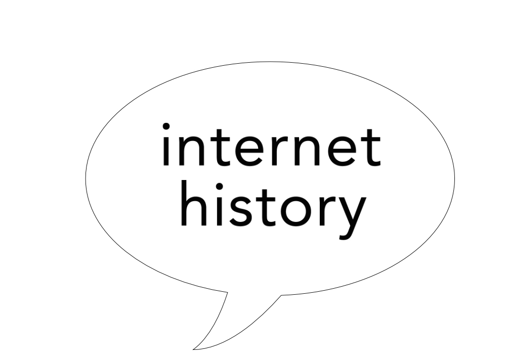

History of The Internet
by Nautica Burkett
 © Nautica Burkett
Introduction
By definition the Internet is a worldwide, publicly accessible series of interconnected computer networks that transmit data by packet switching using the standard Internet Protocol. How did this technology come to be so popular and so widely used around the world? Was it always so large and extensive, filled with information about just about anything you can possibly imagine and accessible from almost anywhere, anytime? The answer is no and it is important to understand where it came from to understand how to utilize it to its fullest potential now.
Creation
The Internet’s origin have their roots in a military project, the Semi-Automatic Ground Environment (SAGE) program, which networked country-wide radar systems together for the first time. This was created around 1958 as part of an attempt to regain the lead in technology from the Soviet Union which had recently launched Sputnik.
J.C.R. Licklider was selected to head the committee which controlled the SAGE project. He envisioned universal networking as a unifying human revolution. Licklider recruited Lawrence Roberts to head a project which implemented a network. Roberts had worked with the U.S. Air Force on a packet switching system as opposed to a circuit switching system. On October 29, 1969, Licklider and Roberts interconnected the first two nodes between UCLA and SRI International at Menlo Park, California. This was the beginning of the Advanced Research Projects Agency Network (ARPANET) which was one of the key networks which our Internet today was based off of. Soon after the first international packet-switched network service was created between U.S. and U.K.
In 1984, the National Science Foundation (NSF) commissioned the construction of a 1.5 megabit/second network which became known as NSFNET. In 1989 the US Federal Networking Council approved the interconnection of the NSFNET to the commercial MCI Mail system. Soon after, other commercial e-mail services were connected such as OnTyme, Telemail, and CompuServe. Three Internet Service Providers (ISPs) were also created: UUNET, PSINET, and CERFNET. More and more seperate networks were created that eventually interconnected with this large, growing network of networks.The ability of TCP/IP to work over virtually any pre-existing communication networks allowed for a great ease of growth, although the rapid growth of the Internet was due primarily to the availability of commercial routers from companies such as Cisco Systems, Proteon and Juniper, the availability of commercial Ethernet equipment for local-area networking and the widespread implementation of TCP/IP on the UNIX operating system.
Growth
The Internet is defined as the worldwide interconnection of individual networks operated by government, industry, academia, and private parties. Originally the Internet served to interconnect laboratories engaged in government research, and since 1994 it has been expanded to serve millions of users and a multitude of purposes in all parts of the world. In a matter of very few years, the Internet consolidated itself as a very powerful platform that has changed forever the way we do business, and the way we communicate. The Internet, as no other communication medium, has given an International or, if you prefer, a “Globalized” dimension to the world. Internet has become the Universal source of information for millions of people, at home, at school, and at work. The Internet continues to be the most democratic of all the mass media. With a very low investment, anyone can have a web page in Internet. This way, almost any business can reach a very large market, directly, fast and economically, no matter the size or location of the business. With a very low investment, almost anybody that can read and write can have access and a presence in the World Wide Web. Blogging has consolidated the social media and the people everywhere are expressing and publishing their ideas and opinions like never before.
Today’s Internet
Internet is very famous nowadays for satisfying people with various services related to various different fields. It is a very versatile facility which can help you in completing many tasks easily and conveniently with few clicks. It can be any work of daily usage or any specific service which needs a lot of research and formalities to be done beforehand. Almost everything is now available over internet in this age of advancement of technologies. It is in general practice nowadays for a person to look for a particular solution over there and getting satisfied with the appropriate solution. You can pay your bills online and purchase various items by going through various websites and choosing among a variety of options. One can get information on any particular thing around the world using internet facility.